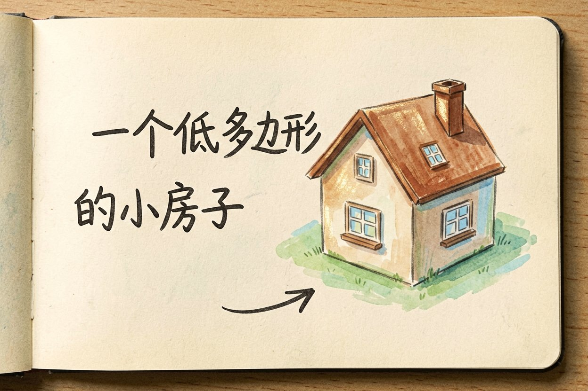
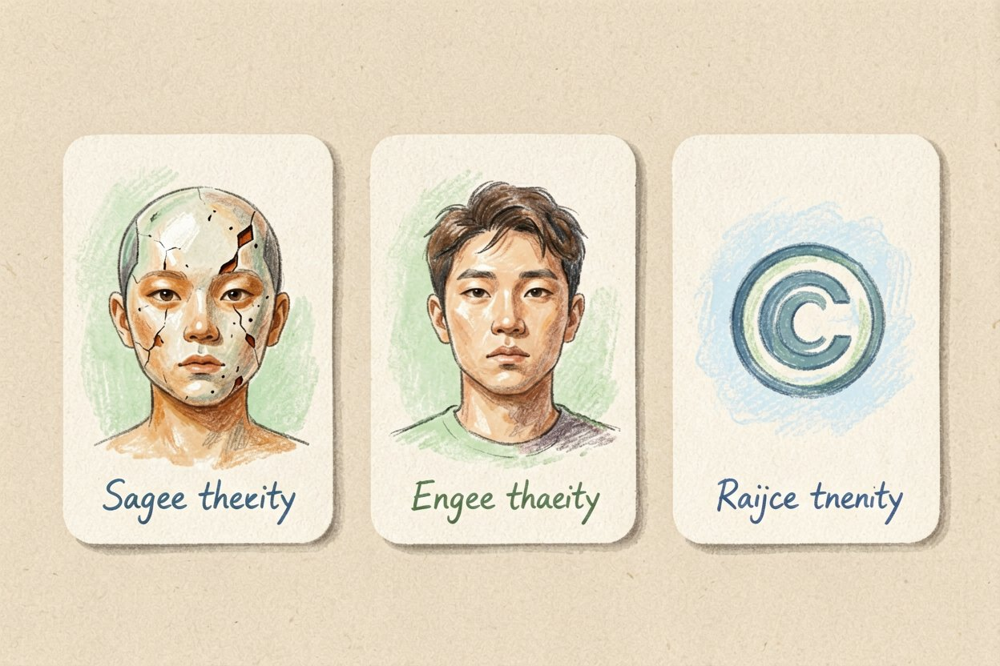
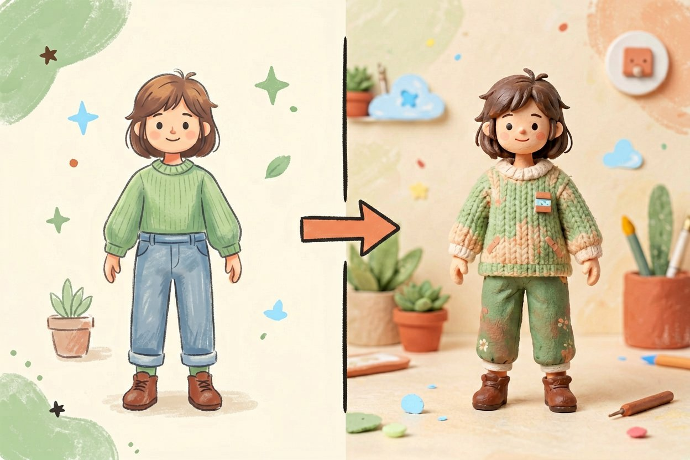
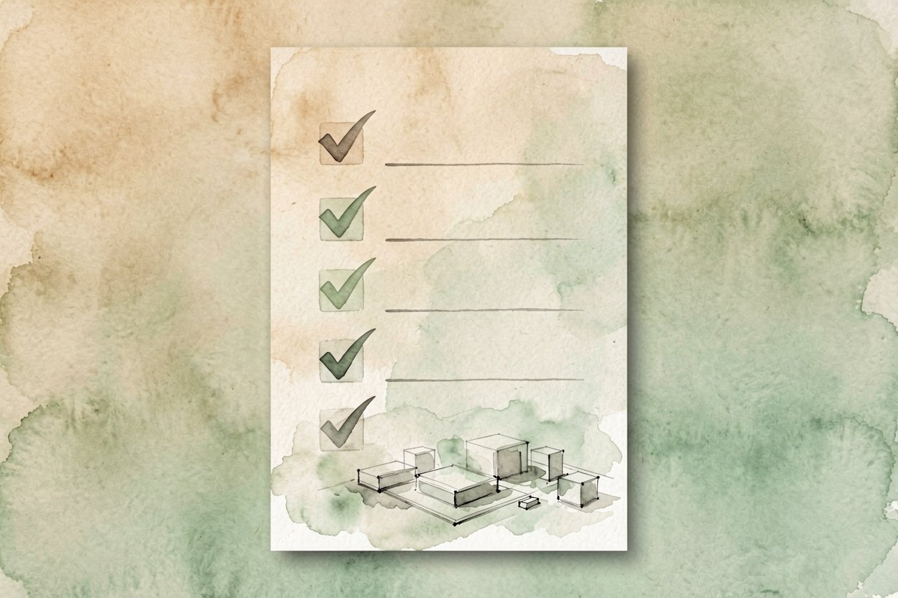

AI 生成 3D 模型：从一句话到可打印
想做个三维模型却不会建模？现在输入一句话或一张图，AI 就能给你转出可旋转的三维文件。
AI 生成 3D 模型是什么：一句话解释

AI 生成 3D 模型，就是输入一段文字或一张图片，模型直接产出带立体结构的三维文件。你拿到的是一个能旋转、能放大看细节、能导入建模软件继续改的物体，而不只是一张平面图。
它和AI 图像生成原理是亲戚，底层都离不开扩散模型是什么。区别在于图像只生成一个视角，三维模型要同时保证前后左右都对得上，技术难度更高。
两条主流路线：文生模型与图生模型
文生模型最省事。你写「一个圆润的陶瓷马克杯，米白色，把手在右侧」，它就出模型。适合脑子里有想法、但没参考图的情况。
图生模型更可控。你给一张产品照片或手绘图，它照着还原成三维。做电商或工业设计时，这条路线还原度更高，和AI 商品图拍摄能接上。
两条路线都能导出通用格式。常见的是 GLB、OBJ、STL。要 3D 打印选 STL，要放网页或游戏里选 GLB。
提示词示例：
一个低多边形的小房子，尖屋顶，木色外墙，
门前有三级台阶，整体卡通风格，适合做游戏素材。
输出格式：GLB，面数尽量低。第一次出模型的实操步骤
先想清楚用途。是打印出来、做动画、还是当游戏素材？用途决定格式和面数，别等生成完才发现不对。
再把描述写细。形状、材质、颜色、风格各写一句。描述越具体，模型越贴近你想要的样子。
然后看预览再下载。多数工具会先给一个可旋转的预览，你转一圈确认没破面、没缺块，再导出文件。
最后导入软件验收。用免费查看器打开，检查结构是否闭合。要和AI 海报设计那样，先小样再定稿。
新手最容易踩的三个坑

第一坑是破面和洞。模型表面没闭合，打印会失败、渲染会穿帮。生成后一定转一圈看有没有缺口。
第二坑是比例失真。它常把「高脚杯」做成矮胖杯。关键尺寸要在提示词里写明，或者后期在建模软件里手动拉。
第三坑是版权不清。商用前确认工具的授权范围，有些模型禁止转售。具体权益去官网会员页看，别凭印象就上架。
它和建模软件怎么配合

把 AI 当出形工具最划算。它几秒给你一个大致形态，省掉从零拉线的苦力，剩下的精修交给 blender 这类软件。
复杂结构它常偷懒。比如机械零件的螺纹、卡扣，AI 容易糊成一团，这种细节你在软件里补更稳。
材质和贴图也建议后期做。AI 给的默认材质偏塑料感，想要金属、磨砂、透光，去软件里调参数更真。
别把 AI 出的第一个模型直接拿去打印或卖。AI 生成 3D 模型只是帮你跳过从零建形的苦力活，真正决定成品质量的，还是你事后的检查和修模。记住先打样确认小样再决定量产，别急着一把梭哈，省得返工反而更费时间。

本文信息核对于 2026-08-14。AI 产品的价格、免费额度与功能变动频繁，实际以各工具官网当前说明为准。